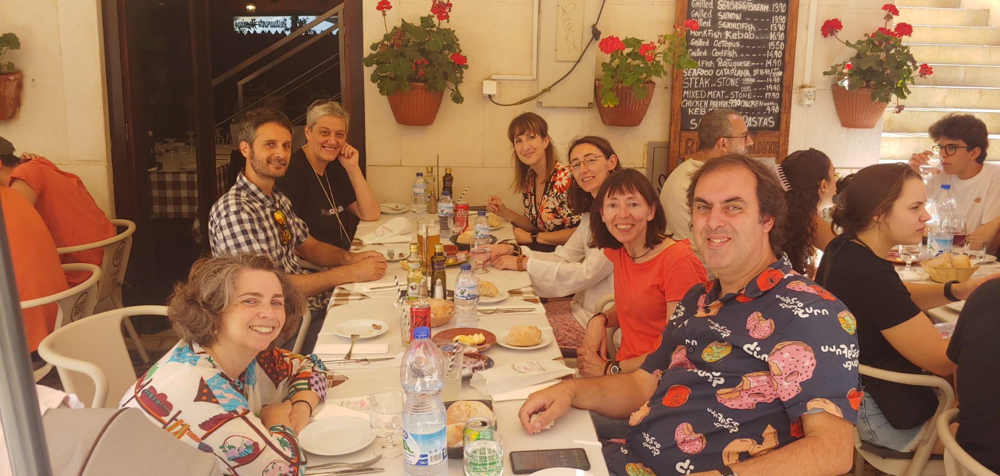
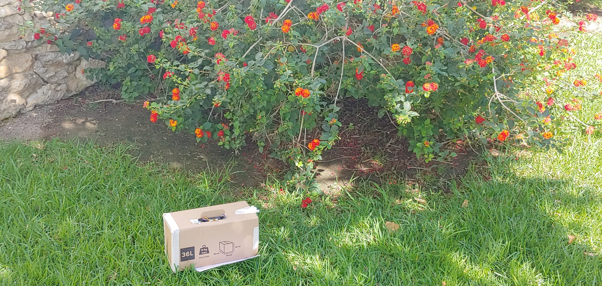
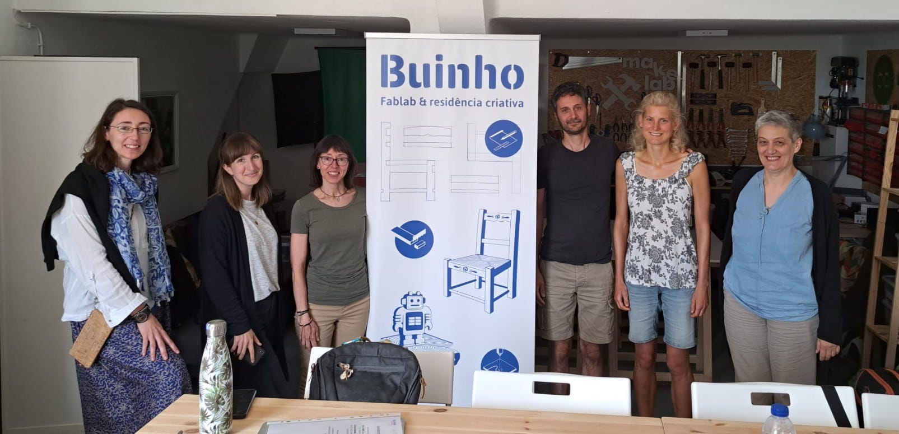

See the Pen CodePen's 2019 by CodePen (@codepen) on CodePen.
Erasmus Workshop in Lissabon

Workshops
Citizen Sensing
Everything about 3D printing
Citizen Sensing
Everything about 3D printing
Workshops
Buinho Education
Makerspaces


Citizen Sensing?
Micro:Bit & MakeBlocks

Arduino & Projekte

Cultural Day
Daten Sammeln in Lissabon


Daten auswerten, 3D Modellieren, Lösungen suchen

Was habe ich mitgenommen?
- unglaublich viel Motivation
- tolle, praktische Unterrichtsideen
-
neue Wege Schüler:innen zu motivieren
(selbst erlebt) -
so viele neue Projektideen
(für die natürlich die Zeit fehlen wird)
“Think by your own head”- Carlos -


Links
Nehmt am Erasmus Programm teil!
|  |